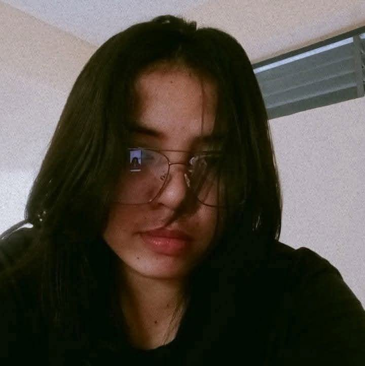

Programming & Development
Building functional applications and learning through code.
HTMLCSSJavaScriptPHPPythonC++MySQL
HELLO, I'M
I bring ideas to life through code, technology, education, and creative design. I enjoy building practical digital solutions and making technology easier to understand.

01 / GET TO KNOW ME
I'm a Computer Science graduate with a passion for creating, teaching, and exploring technology.
My interests bring together software development, hands-on robotics, and visual communication. I enjoy turning ideas into working projects, breaking down technical concepts into simple lessons, and creating designs that communicate clearly.
Whether I'm developing a web application, experimenting with Arduino, or preparing learning materials, I aim to make every project useful, thoughtful, and engaging.
BS Computer Science
NEMSU – Tagbina
Class of 2025
Robotics education and practical technology projects
02 / WHAT I WORK WITH
A mix of technical, creative, and teaching skills developed through projects and hands-on experience.
Building functional applications and learning through code.
Creating interactive projects with microcontrollers and sensors.
Designing visual materials for digital and print communication.
Helping learners understand technology through guided activities.
03 / SELECTED WORK
A selection of software, hardware, and creative work. Add your own screenshots to make each project even stronger.
A court reservation web application with customer and administrator accounts, booking calendar, availability checking, payment verification, and notifications.
A Flask-based crop prediction project using a Random Forest model and soil and environmental inputs.
An Arduino-based prototype combining fingerprint recognition and automated water dispensing. This project received Champion recognition.
Hands-on activities using ultrasonic sensors, LEDs, buzzers, LCD displays, and servo motors to introduce programming and electronics.
Editorial layouts, photo arrangements, captions, and publication materials for school and organizational projects.
Visual materials such as flyers, event graphics, learning resources, and presentation designs.
Project descriptions are editable. Include only work you personally contributed to, and add screenshots or repository links where available.
04 / MY JOURNEY
Guiding students through introductory robotics and programming activities, explaining code in accessible steps, and supporting hands-on learning with robotics kits and Arduino projects.
Continuing to develop teaching knowledge and classroom skills in preparation for a teaching career.
Assisted with license printing verification and official receipt checking during on-the-job training.
Built a foundation in programming, software development, and computing concepts through academic work and projects.
Recognition for a technology project. Add the event name and year when ready.
05 / HAVE A PROJECT IN MIND?
I'm open to opportunities, collaborations, and projects where technology, creativity, and learning come together.
Philippines